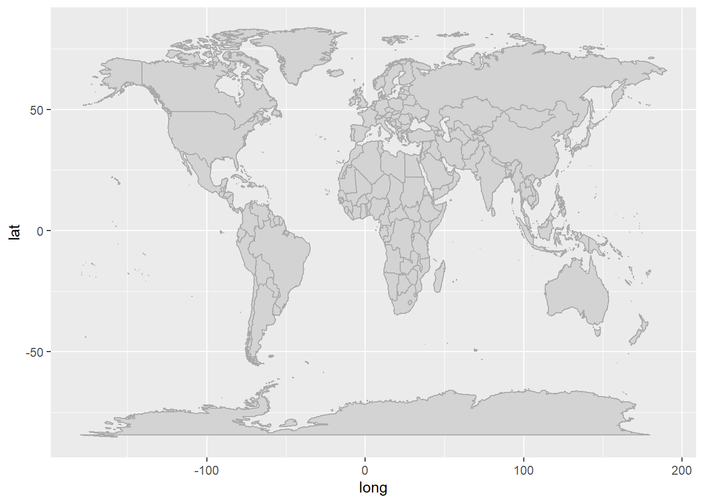
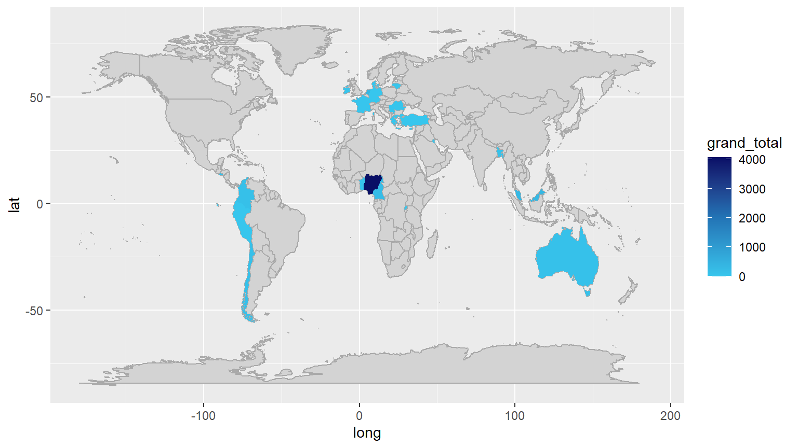
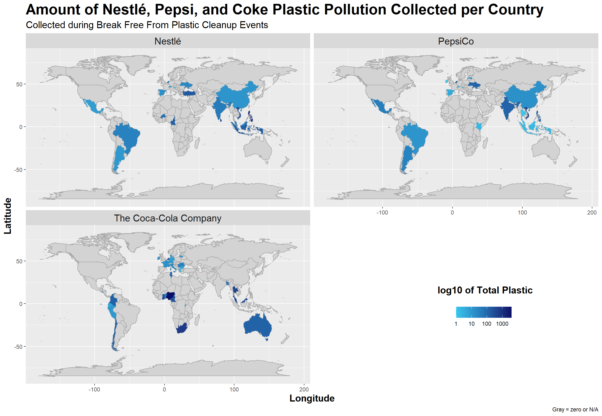

Show code
library(tidyverse) # For many things including ggplot and dplyr
library(here) # For easy saving and deploying
library(mapdata) # For maps
library(rsconnect) # For deployingCreated on: 2026-10-06
Last Updated on: 2026-10-12
In this project, I will be taking a look at plastic collection data from Break Free From Plastic’s cleanups in 2019 and 2020. Specifically, I would like to understand the distribution of plastic they collected from select companies such as Nestlé, PepsiCo, and Coca-Cola.


Above left: Image of plastic cleanup from a Break Free From Plastic cleanup event.
Above right: Image of a diver holding a coke bottle and a sign saying “Coca-cola is this yours?”
Load the libraries:
library(tidyverse) # For many things including ggplot and dplyr
library(here) # For easy saving and deploying
library(mapdata) # For maps
library(rsconnect) # For deployingLoad in the data:
# bring csv information into R
plastics <- read_csv('https://raw.githubusercontent.com/rfordatascience/tidytuesday/main/data/2021/2021-01-26/plastics.csv')Let’s see what this data looks like:
# look at the first 4 rows
head(plastics, n = 4)# A tibble: 4 × 14
country year parent_company empty hdpe ldpe o pet pp ps pvc
<chr> <dbl> <chr> <dbl> <dbl> <dbl> <dbl> <dbl> <dbl> <dbl> <dbl>
1 Argentina 2019 Grand Total 0 215 55 607 1376 281 116 18
2 Argentina 2019 Unbranded 0 155 50 532 848 122 114 17
3 Argentina 2019 The Coca-Cola… 0 0 0 0 222 35 0 0
4 Argentina 2019 Secco 0 0 0 0 39 4 0 0
# ℹ 3 more variables: grand_total <dbl>, num_events <dbl>, volunteers <dbl>With the plastic data, we could do several things. We could explore the number of events per country in a heatmap. We could also make a heatmap of the number of participants, or amount of plastic per country. In this case, I am curious about what countries specific companies’ plastics end up.
Load in the base world map:
# pull world map data
world <- map_data("world")
# plot the base world map to see what it looks like:
ggplot() +
geom_polygon(data = world,
aes(x = long,
y = lat,
group = group),
color = "darkgray",
fill = "lightgray")+
guides(fill = "none")
Nestlé, PepsiCo, and The Coca-Cola Company all use plastics extensively in their packaging.


Let’s take a closer look at where and how many of their plastics were found during cleanup events.
First we must full_join the world map and plastics datasets. Where do they match up? The column named region/country. The headings are different. Let’s fix that.
plastics |>
# first, rename the region column in plastics to match the country column in world
rename(region = country) |>
#then, inner_join
full_join(world) -> world_plasticsOK, that dataset seems a bit massive with 12,467,737 rows. Let’s see how it looks for the first few rows to make sure the join worked ok.
# print the first few rows
head(world_plastics)# A tibble: 6 × 19
region year parent_company empty hdpe ldpe o pet pp ps pvc
<chr> <dbl> <chr> <dbl> <dbl> <dbl> <dbl> <dbl> <dbl> <dbl> <dbl>
1 Argentina 2019 Grand Total 0 215 55 607 1376 281 116 18
2 Argentina 2019 Grand Total 0 215 55 607 1376 281 116 18
3 Argentina 2019 Grand Total 0 215 55 607 1376 281 116 18
4 Argentina 2019 Grand Total 0 215 55 607 1376 281 116 18
5 Argentina 2019 Grand Total 0 215 55 607 1376 281 116 18
6 Argentina 2019 Grand Total 0 215 55 607 1376 281 116 18
# ℹ 8 more variables: grand_total <dbl>, num_events <dbl>, volunteers <dbl>,
# long <dbl>, lat <dbl>, group <dbl>, order <int>, subregion <chr>Let’s extract our companies of interest so we aren’t wrangling 12 million rows. Let’s try Coca-Cola first:
world_plastics |>
# filter to keep only "The Coca-Cola Company" entries in the parent_company column
filter(parent_company == "The Coca-Cola Company") |>
# then make a simple plot
ggplot() +
geom_polygon(data = world,
aes(x = long, y = lat, # plotting the map underneath the data
group = group),
fill = "lightgray",
color = "darkgray")+
geom_polygon(aes(x = long,
y = lat, # plotting the number of plastics per country
group = group,
fill = grand_total))+
scale_fill_continuous(palette = c("#37c6ed", "#2273b5", "#090f66")) # change the colors of the fill to look pretty
Ok let’s do it with the rest of the companies, log transform the plastic counts to help distinguish locations, and fix some of the other issues with Figure 2 above:
world_plastics |>
# first, filter to keep only the three companies of interest
filter(parent_company == "The Coca-Cola Company"|
parent_company == "PepsiCo"|
parent_company == "Nestlé") |>
# then, remove rows where grand_total = 0 as it appears to map 0s otherwise. Not sure if there's a better way to do this...
filter_out(grand_total == "0") |>
# plot the new data
ggplot() +
geom_polygon(data = world,
aes(x = long, y = lat, # base world map
group = group),
fill = "lightgray",
color = "darkgray")+
geom_polygon(aes(x = long,
y = lat, # plastic heatmap layer
group = group,
fill = grand_total))+
scale_fill_gradientn(transform = "log10", # log transform the grand_total to better see smaller differences.
colors = c("#37c6ed", "#2273b5", "#090f66"), # make the colors pretty
guide = guide_colourbar(direction = "horizontal"))+ # make the legend horizontal
facet_wrap(~parent_company, ncol=2)+ # facet wrap by company
theme_grey()+ # grey theme
theme(legend.position = c(0.8,0.2), # make the legend sit in the empty space
plot.title = element_text(face = "bold", size = 23),
plot.subtitle = element_text(size = 15),
axis.title = element_text(face = "bold", size = 15), # fix text sizes
strip.text = element_text(size = 15),
plot.tag = element_text(face = "bold", size = 15),
plot.tag.position = c(0.81,0.3))+ # move the tag label to be above the legend
labs(fill = NULL, # delete the legend title, using tag label instead for more flexibility in location
title = "Amount of Nestlé, Pepsi, and Coke Plastic Pollution Collected per Country",
subtitle = "Collected during Break Free From Plastic Cleanup Events",
caption = "Gray = zero or N/A",
x = "Longitude",
y = "Latitude",
tag = "log10 of Total Plastic") # tag label is used instead of legend title
As we can see in Figure 3, Nestlé and PepsiCo appear to have somewhat similar patterns of plastic distribution, while Coca-Cola appears in different regions.
#
#ggsave(here("Week_07", # save location
# "Output",
# "hw_week07_map.png"), # plot name
# width = 13,
# height = 9) # plot size
#
#Data for the figures courtesy of: Plastic Pollution Dataset - Tidy Tuesday